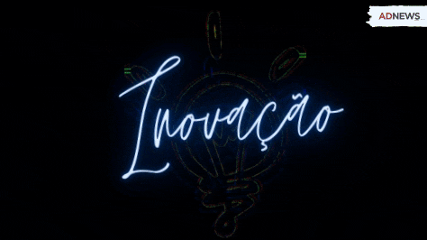
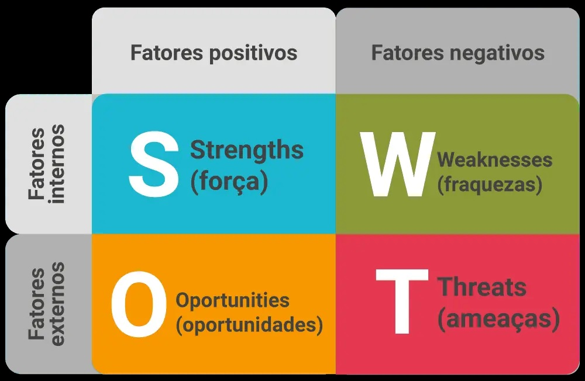
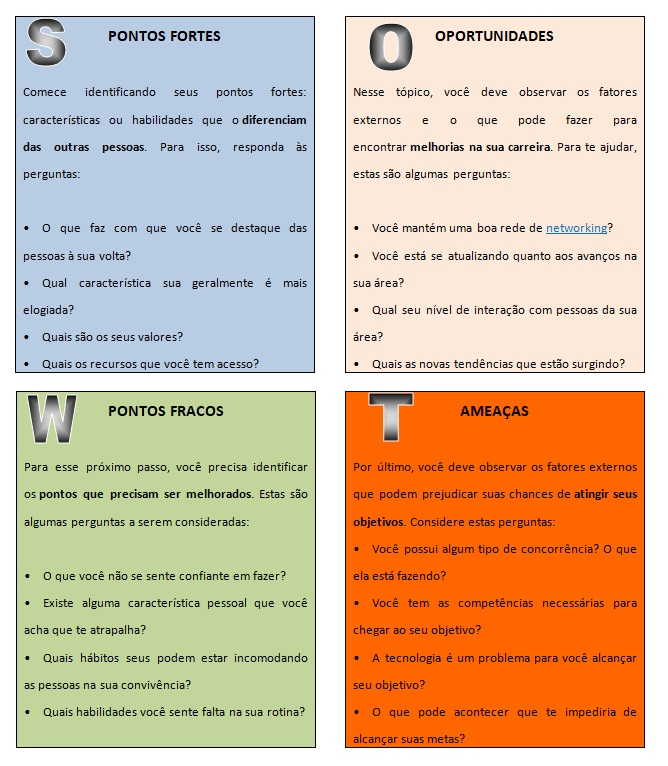
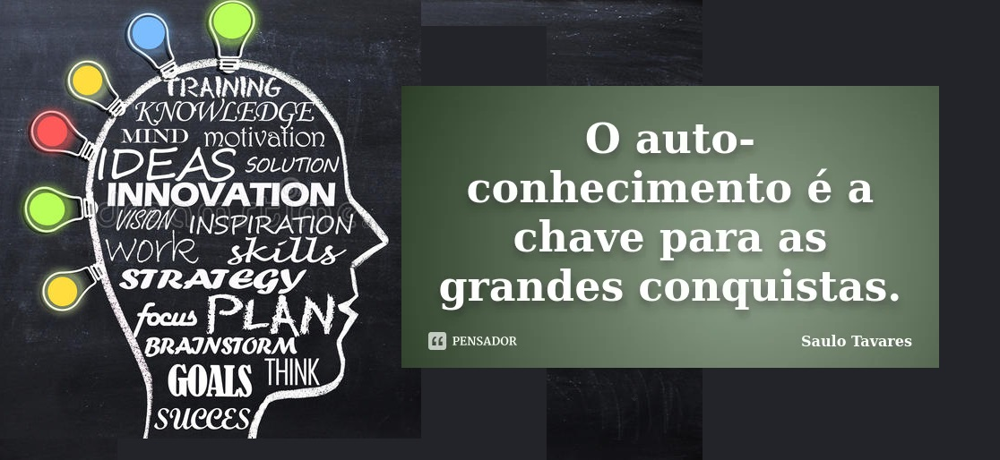

MATRIZ DE SWOT
PESSOAL
Olá aluno(a), espero encontrá-lo(a) bem!
A empregabilidade nos dias atuais é um assunto de grande relevância. Se torna mais importante ainda o nosso autoconhecimento, sabermos como nos prepararmos para enfrentar o "Mundo do Trabalho".
Qual foi a ultima vez que você refletiu sobre você e construiu a sua autoanálise?
Pois bem! O objetivo dessa postagem, tem como foco, a abordagem de assuntos interessantes que poderão levá-lo(a) a uma autorreflexão.
Quer saber detalhes? Então continue lendo...
Autoconhecimento: "Filtrando o pensamento"
Agora você saberá o significado de autoconhecimento.
Autoconhecimento
Como a própria palavra diz, é o conhecimento que uma pessoa tem sobre si mesma. É uma investigação individual que busca identificar quais são as características mais marcantes, os gostos, as inclinações, os padrões de comportamento e os sentimentos vivenciados por ela.
Segundo a psicologia, significa o conhecimento de um indivíduo sobre si mesmo. A prática de se conhecer melhor faz com que uma pessoa tenha controle sobre suas emoções, independente de serem positivas ou não
Análise de SWOT - Pessoal
A análise SWOT pessoal é uma adaptação da técnica frequentemente aplicada em empresas, produtos e processos para
avaliar suas:
Forças (S - Strengths),
Fraquezas (W - Weaknesses),
Oportunidades (O - Opportunities)
e Ameaças (T - Threats).
Trata-se de uma ferramenta que pode ajudar você e sua equipe a fazer planejamentos
de modo estratégico e ficar à frente das tendências de mercado bem como abrindo
o leque de possibilidades, levando em consideração fatores internos e externos,
assim como o macro e o micro ambiente
No aspecto pessoal, a ferramenta permite que o indivíduo identifique seus
pontos fortes e fracos, desafios e oportunidades, facilitando a tomada de decisões
e o alcance de objetivos pessoais e profissionais. É preciso reservar um tempo para
refletir sobre si mesmo e coletar dados para que a ferramenta funcione.
Algumas perguntas podem ajudar nesse processo.
Vamos entender mais? Vamos lá?
Abaixo a representação de como seria um quadro de uma análise e sua disposição.

Quadro de Análise de Swot
Como fazer sua análise SWOT pessoal?
A seguir você aprenderá quais as questões seriam mais importantes para sua análise pessoal de requisitos.
Acompanhe os quadros abaixo e construa sua própria análise baseando-se em seus requisitos (conhecimentos, formações, certificações,
aprendizados, cursos extracurriculares, aptidões, preferências e outros).
Vamos construir sua análise?
Quadro SWOT para análise pessoal
O que analisar?
S
PONTOS FORTES
Comece identificando seus pontos fortes: características ou habilidades que o diferenciam das outras pessoas. Para isso, responda às perguntas:
• O que faz com que você se destaque das pessoas à sua volta?
• Qual característica sua geralmente é mais elogiada?
• Quais são os seus valores?
• Quais os recursos que você tem acesso?
W
PONTOS FRACOS
Para esse próximo passo, você precisa identificar os pontos que precisam ser melhorados. Estas são algumas perguntas a serem consideradas:
• O que você não se sente confiante em fazer?
• Existe alguma característica pessoal que você acha que te atrapalha?
• Quais hábitos seus podem estar incomodando as pessoas na sua convivência?
• Quais habilidades você sente falta na sua rotina?
O
OPORTUNIDADES
Nesse tópico, você deve observar os fatores externos e o que pode fazer para encontrar melhorias na sua carreira.
Para te ajudar, estas são algumas perguntas:
• Você mantém uma boa rede de networking?
• Você está se atualizando quanto aos avanços na sua área?
• Qual seu nível de interação com pessoas da sua área?
• Quais as novas tendências que estão surgindo?
T
AMEAÇAS
Por último, você deve observar os fatores externos que podem prejudicar suas chances de atingir seus objetivos. Considere estas perguntas:
• Você possui algum tipo de concorrência? O que ela está fazendo?
• Você tem as competências necessárias para chegar ao seu objetivo?
• A tecnologia é um problema para você alcançar seu objetivo?
• O que pode acontecer que te impediria de alcançar suas metas?
Considerações
A análise SWOT pessoal tem por objetivo principal o autoconhecimento e levar você a analisar seu posicionamento
no mercado de trabalho, na empresa onde trabalha, na vida pessoal, ou mesmo levar você à tomada de
decisões pessoais voltadas à sua projeção no futuro sobre: estudo (escola), controle pessoal (R/D),
empregabilidade e um vasto horizonte de possibilidades que poderão levar ao seu crescimento e evolução.
Espero que seja de bom proveito esse material. Desejo-lhe sucesso!
Abraços!
Prof. Iraê César Brandão
Gestor de TI/Desenvolvedor/Luck Way
Autoonhecimento
